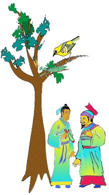
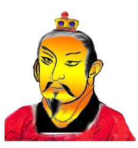

螳螂捕蟬（說苑第九卷“正諫”） 翻譯 江銘輝

吳王想要攻打楚國，告訴身邊的大臣，說﹕「有誰敢勸導的，死刑！」侍從官員中有個年輕讀書人，想要勸告吳王，又不敢說，便身上帶著小彈珠，拿著彈弓，在後花園轉來轉去，露水沾濕了他的衣服，這樣過了三天，吳王說﹕「你何必這樣使衣服遭到露水弄濕﹖」他回答說：「花園中有棵樹，樹上有隻蟬，蟬高高在樹上，一邊嘹亮的叫著，一邊喝著露水，不知道螳螂在它的背後呀！螳螂屈身藏著，想著捕食蟬隻，卻不知有隻黃雀它旁邊！而黃雀伸著脖子想啄食螳螂之際，也不知道底下有彈弓在侍候它。三者都只顧眼前的利益而不顧自己身後潛伏的禍患呀！」
吳王聽了，說：「明白了！」便停止派兵的計劃。
原文
吳王欲伐荊（楚國），告其左右曰：「敢有諫者，死！」舍人（國王的近臣）有少孺子（年輕讀書人）者，欲諫不敢，則懷丸操彈，遊於後園，露沾其衣，如是者三旦，吳王曰：「子來何苦沾衣如此？」對曰：「園中有樹，其上有蟬，蟬高居悲（嘹亮）鳴飲露，不知螳螂在其後也！螳螂委身曲附，欲取蟬而不顧知黃雀在其傍也！黃雀延頸欲啄螳螂而不知彈丸在其下也！此三者皆務欲得其前利而不顧其後之有患也。」吳王曰：「善哉！」乃罷其兵。

作者
劉向（西元前77年－西元前6年），字子政，本名更生，漢沛縣人。漢高祖弟弟元王劉交的第四代孫。西汉经学家、目录学家、文学家。漢元帝時為中壘校尉，後因權臣專政，被廢十多年。漢成帝時，改名為向，任光祿大夫，校閱經傳諸子詩賦等書籍，撰成《別錄》一書，為我國最早的分類目錄。另著有《新序》、《說苑》、《列女傳》、《洪範五行》等書。
出處：說苑
本篇錄自說苑第九卷“正諫”中的一個小故事，說苑一書係西漢劉向所撰。劉向曾當校對秘書，本書就是他在校書時根據皇家藏書和民間圖籍，將一些先秦至西漢的歷史故事和傳說按類編輯，並夾有作者的議論，借題發揮儒家的政治思想和道德觀念，帶有一定的哲理。原著有二十卷，後僅存五卷，大部分已經散佚，後經宋曾鞏搜輯，再復原為二十卷，每卷各有標目。二十卷的標目依次為：君道、臣術、建本、立節、貴德、複恩、政理、尊賢、正諫、敬慎、善說、奉使、權謀、至公、指武、談叢、雜言、辨物、修文、反質。